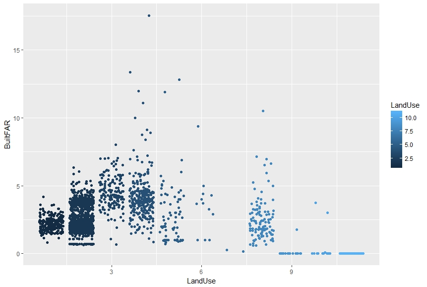

| Assignment 3: Exploring Harlem through Land Use |
|---|

|
|
The case for this exploration was to see if there was a connection between Land Use and Zip Codes (ZC) in Central Harlem South. The exploration also considered School Districts (SD) as an object of analysis as the Land Use (LU) compostion may help to determine impacts on the community. Meaning, that Land Use diversity, networks, and concentration may be a signiture of spatial inequities. The exploration also considered BuiltFAR (FAR) to investigate how well it was explained by LU. That is, whether LU was highly correlated to FAR or not. The charts above show how the two variable of FAR and LU relate, in conjunction to the colorized SD and ZC categories. There were two categories for SD (3,5) and four for ZC (10026, 10027, 10029, 10035). RStudio was used for data cleaning and analysis.

The study revealed highly statistically significant figures, unsurprisingly, as the type of Land Use does change the allowable FAR. However, there is a point where the correlation starts to break (as suggested in the image above). Perhaps, a nonlinear regression will help to better explain this event. Still, the study was focused on diversity, networks, and concentration of Land Use in relation to the categories of Zip Code and School District. To do so, two Kernel Density Graphs were produced to determine ranges of concentrated LU for both ZC and SD. As seen in the graphs above, the data shows that there is a concentration of Family and Multifamily buildings, Mixed Residential and Commercial Buildings, until it declines for Commercial & Office buildings for Zip Codes 10026 & 10027 (Encompasses areas of Columbia University and the new development on the Westside of East side of Manhattan Avenue). Zip Code 10029 in East Harlem is constituted by most of Bloomingdale (from about 91st to 114th) holds a high concentration of Commercial & Office Buidlings, Industrial & Manufacturing, Transporation & Utility, and Public Facilities & Institutions. As for 10035, just North of East Harlem, the data shows that thre is more proportional, or at least less steep, of LU types. Still 10035 has a some concentration from Multi-family Buildings to Public Facilities & Institutions. The same is true for the SD 3 & 5 as there is a clear divide between LU diversity, networks, and concentrations. SD 3 (Upper Westside and Bloomingdale) has a greater concentration of Residential than the SD 5 (Mahattanville and Harlem). SD 3 also seems to have resisted the influx of Commercial and Office building development, while SD 5 had to balance Residential and Commercial & Office development. Results, ZC serves as a spatial signiture for variability among LU, that is, general mixture, with the exception of 10029. SD serves as a spatial signiture of segregation and probable NIMBY-ism. As SD 3 holds more Residential buildings which probably spurred Commercial development into SD5. Still, SD 5 leaves out ZC 10029 (East harlem), which has the highest concentration of Commercial and Public Facilities. |